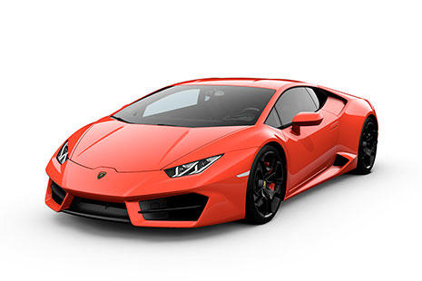

Un cotxe és un vehicle de motor que permet transportar persones d’un lloc a un altre. Hi ha molts tipus de cotxes, esportius, diesel, gasolina i elèctrics.
Actualment podem trobar cotxes de gasolina, diesel, híbrids i elèctrics. Cada tipus té característiques diferents en quant al consum i al funcionament.

| Marca | Model | Tipus |
|---|---|---|
| Toyota | Corolla | Compacte |
| BMW | Serie 3 | Berlina |
| Mercedes-Benz | Classe C | Berlina |